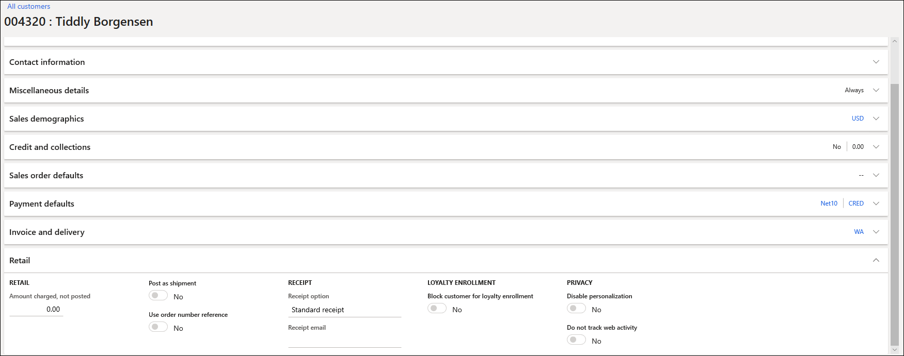
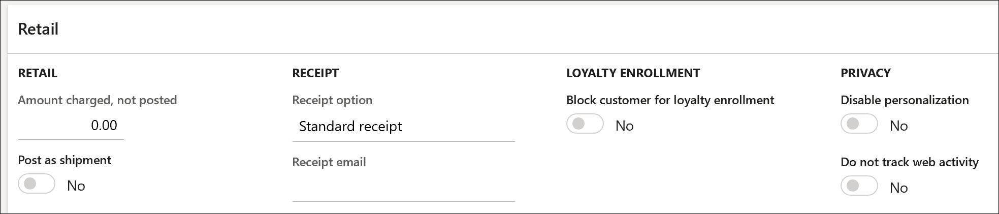

Personalisierte Empfehlungen abmelden
Important
Dynamics 365 Retail ist jetzt Dynamics 365 Commerce und bietet umfassende Handelsfunktionen für alle Kanäle – von E-Commerce über Shops bis hin zu Callcentern. Weitere Informationen zu diesen Änderungen finden Sie unter Microsoft Dynamics 365 Commerce.
In diesem Thema wird erläutert, wie Sie Kunden davon abhalten können, personalisierte Empfehlungen in Microsoft Dynamics 365 Commerce zu erhalten.
Übersicht
Während der Kontoerstellung werden neue Kunden automatisch eingerichtet, um personalisierte Empfehlungen zu erhalten. Jedoch bietet Dynamics 365 Commerce Einzelhändlern verschiedene Möglichkeiten, Benutzern zu ermöglichen, diese Empfehlungen nicht zu erhalten und die Verarbeitung ihrer personenbezogenen Daten einzuschränken. Authentifizierte Benutzer, die sich gegen personalisierte Empfehlungen entscheiden, sehen keine personalisierten Listen mehr. Darüber hinaus werden alle persönlichen Daten, die zur Personalisierung gesammelt werden, aus personalisierten Empfehlungsmodellen entfernt.
Weitere Informationen zum Empfangen personalisierter Empfehlungen finden Sie unter Personalisierte Produktempfehlungen aktivieren.
Möglichkeiten für Einzelhändler, ein Abmeldungs-Erlebnis zu implementieren
Einzelhändler haben drei Möglichkeiten, ein Abmeldungs-Erlebnis zu implementieren.
Deaktivierung im Namen der Benutzer
In der Kontoverwaltung im Commerce-Backoffice können sich Einzelhändler für Benutzer abmelden.
Suchen Sie auf der Back-Office-Startseite nach alle Kunden.
Suchen Sie nach einem Kunden und wählen Sie dann die Registerkarte Einzelhandel.

Unter Privatsphäre stellen Sie die Option Deaktivieren Sie die Personalisierung auf Ja ein.

Klicken Sie auf Speichern und schließen Sie die Seite.
Erfahrung mit modulbasierter Abmeldungs-Erfahrung
Einzelhändler können authentifizierten Benutzern erlauben, sich selbst von personalisierten Empfehlungen abzumelden. Fügen Sie das Benutzer-Deaktivierungsmodul zu den Profilseiten des Kundenkontos hinzu, um diese Deaktivierungsfunktion zu nutzen.
Benutzerdefinierte Erweiterungen
Einzelhändler können ihre eigenen Erweiterungen erstellen, um das Abmelde-Erlebnis für Benutzer zu verwalten. Weitere Informationen finden Sie unter Rufen Sie die Retail Server APIs auf (This is an external link) und Online-Kanal-Erweiterbarkeit (This is an external link).
Erhalten Sie eine digitale Kopie der personalisierten Empfehlungsdaten für einen authentifizierten Benutzer
Kunden möchten möglicherweise eine digitale Kopie ihrer persönlichen Daten erhalten und auch eine exportierte Ansicht der Ergebnisse ihrer Empfehlungen anzeigen. Wenn ein Kunde diese Informationen anfordert, muss der Einzelhändler eine benutzerdefinierte Erweiterung erstellen, die die Retail Server-Anwendungsprogrammierschnittstelle (API) aufruft und die vollständigen Ergebnisse von der Tipps für Sie Liste abruft, basierend auf der Kundennummer des Kunden. Die Ergebnisse können dann im CSV-Format (mit Komma getrennte Werte) exportiert und mit dem Kunden geteilt werden.
Das folgende Beispiel zeigt, wie ein Einzelhändler diese Aufgabe ausführen kann.
Der Einzelhändler erstellt eine benutzerdefinierte Erweiterung, um persönliche Empfehlungsdaten im Namen des Benutzers abzurufen. Informationen zum Erstellen von Modulen, zum Klonen vorhandener Module, zum Aufrufen von Retail Server-APIs und zum Aufrufen von Datenaktionen finden Sie unter Online-Kanal-Erweiterbarkeit (This is an external link).
Die benutzerdefinierte Nebenstelle ruft die Empfehlungen abrufen Kerndatenaktion ab und übergibt die erforderlichen Informationen an sie, basierend auf den Anforderungen der Liste. Im Falle der Tipps für Sie Liste muss die Erweiterung den richtigen Listennamen und die richtige Kunden-ID an die Datenaktion übergeben.
Eine Möglichkeit zum Erstellen der benutzerdefinierten Erweiterung besteht darin, das vorhandene Produktsammlungsmodul zu klonen, das zum Zurückgeben von Empfehlungsergebnissen verwendet wird. Durch Klonen dieses vorhandenen Moduls kann ein Einzelhändler den vorhandenen Code ändern und eine neue Schaltfläche hinzufügen, mit der die Empfehlungsergebnisse in eine CSV-Datei exportiert werden. Weitere Informationen finden Sie unter Klonen Sie eine Modulbibliothek (This is an external link) und Produktsammelmodule.
Eine vollständige Ansicht der Retail Server-API-Bibliothek finden Sie unter Retail Server-Kunden- und Verbraucher-APIs (This is an external link).
Nachdem die benutzerdefinierte Erweiterung erstellt wurde, kann der Einzelhändler eine CSV-Datei mit allen Empfehlungsergebnissen exportieren, die auf der eindeutigen Kunden-ID des authentifizierten Benutzers basiert.
Der Einzelhändler kann die exportierte CSV-Datei mit der vollständigen personalisierten Liste der empfohlenen Produkte für den authentifizierten Benutzer freigeben.
Zusätzliche Ressourcen
Überblick über Produktempfehlungen
Aktivieren von Azure Data Lake Storage in einer Dynamics 365 Commerce Umgebung
Produktempfehlungen aktivieren
Personalisierte Empfehlungen aktivieren
Die Empfehlungen „Produkte mit ähnlichem Aussehen kaufen“ aktivieren
Produktempfehlungen in POS hinzufügen
Empfehlungen dem Transaktionsbildschirm hinzufügen
Anpassung der Ergebnisse der AI-ML-Empfehlungen
Manuell kuratierte Empfehlungen erstellen